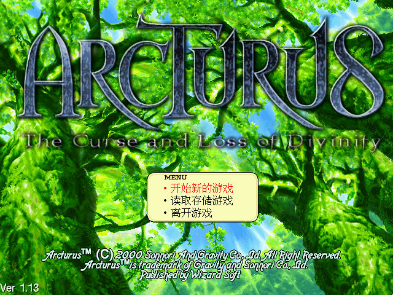
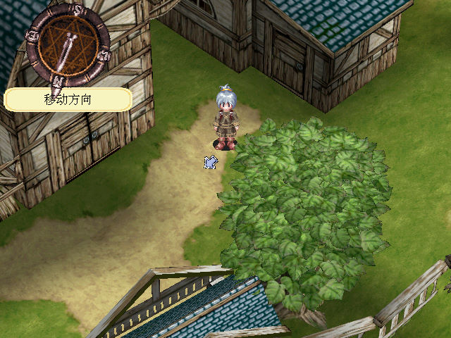
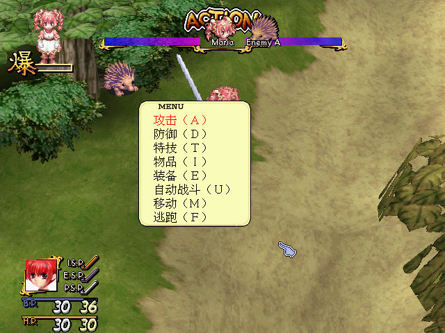

名稱：星塵物語 (Arcturus: The Curse and Loss of Divinity，中文版)
簡介：韓國Wizard 2000年出品的角色扮演遊戲，以3D畫面呈現，採團隊回合方式戰鬥。2002
年由松崗繁中化並代理發行，2003年由上海依星簡中化並代理發行 [待補]。



備註：本版為簡中版缺影片（缺繁中光碟）
保護：不明
備註：VirtualBox無法正常執行，虛擬機請使用VMware+DxWnd（可全螢幕）。
操作：
滑鼠左鍵/方向鍵 = 移動
滑鼠左鍵/Alt = 動作（如交談）
滑鼠右鍵/QW = 旋轉視角
AZ = 縮放視角
Ctrl = 跳躍
滑鼠右鍵按自己/F2 = 人物欄
F3/F4 = 地點方向指示
F5 = 顯示俯瞰圖
F9 = 截圖
Esc = 離開遊戲
說明：與旅館老闆交談才能存檔。